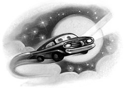

Ron!” breathed Harry, creeping to the window and pushing it up so they could talk through the bars. “Ron, how did you — What the — ?”
Harry’s mouth fell open as the full impact of what he was seeing hit him. Ron was leaning out of the back window of an old turquoise car, which was parked in midair. Grinning at Harry from the front seats were Fred and George, Ron’s elder twin brothers.
“All right, Harry?” asked George.
“What’s been going on?” said Ron. “Why haven’t you been answering my letters? I’ve asked you to stay about twelve times, and then Dad came home and said you’d got an official warning for using magic in front of Muggles —”
“It wasn’t me — and how did he know?”
“He works for the Ministry,” said Ron. “You know we’re not supposed to do spells outside school —”
“You should talk,” said Harry, staring at the floating car.
“Oh, this doesn’t count,” said Ron. “We’re only borrowing this. It’s Dad’s, we didn’t enchant it. But doing magic in front of those Muggles you live with —”
“I told you, I didn’t — but it’ll take too long to explain now — look, can you tell them at Hogwarts that the Dursleys have locked me up and won’t let me come back, and obviously I can’t magic myself out, because the Ministry’ll think that’s the second spell I’ve done in three days, so —”
“Stop gibbering,” said Ron. “We’ve come to take you home with us.”
“But you can’t magic me out either —”
“We don’t need to,” said Ron, jerking his head toward the front seat and grinning. “You forget who I’ve got with me.”
“Tie that around the bars,” said Fred, throwing the end of a rope to Harry.
“If the Dursleys wake up, I’m dead,” said Harry as he tied the rope tightly around a bar and Fred revved up the car.
“Don’t worry,” said Fred, “and stand back.”
Harry moved back into the shadows next to Hedwig, who seemed to have realized how important this was and kept still and silent. The car revved louder and louder and suddenly, with a crunching noise, the bars were pulled clean out of the window as Fred drove straight up in the air. Harry ran back to the window to see the bars dangling a few feet above the ground. Panting, Ron hoisted them up into the car. Harry listened anxiously, but there was no sound from the Dursleys’ bedroom.
When the bars were safely in the back seat with Ron, Fred reversed as close as possible to Harry’s window.
“Get in,” Ron said.
“But all my Hogwarts stuff — my wand — my broomstick —”
“Where is it?”
“Locked in the cupboard under the stairs, and I can’t get out of this room —”
“No problem,” said George from the front passenger seat. “Out of the way, Harry.”
Fred and George climbed catlike through the window into Harry’s room. You had to hand it to them, thought Harry, as George took an ordinary hairpin from his pocket and started to pick the lock.
“A lot of wizards think it’s a waste of time, knowing this sort of Muggle trick,” said Fred, “but we feel they’re skills worth learning, even if they are a bit slow.”
There was a small click and the door swung open.
“So — we’ll get your trunk — you grab anything you need from your room and hand it out to Ron,” whispered George.
“Watch out for the bottom stair — it creaks,” Harry whispered back as the twins disappeared onto the dark landing.
Harry dashed around his room, collecting his things and passing them out of the window to Ron. Then he went to help Fred and George heave his trunk up the stairs. Harry heard Uncle Vernon cough.
At last, panting, they reached the landing, then carried the trunk through Harry’s room to the open window. Fred climbed back into the car to pull with Ron, and Harry and George pushed from the bedroom side. Inch by inch, the trunk slid through the window.
Uncle Vernon coughed again.
“A bit more,” panted Fred, who was pulling from inside the car. “One good push —”
Harry and George threw their shoulders against the trunk and it slid out of the window into the back seat of the car.
“Okay, let’s go,” George whispered.
But as Harry climbed onto the windowsill there came a sudden loud screech from behind him, followed immediately by the thunder of Uncle Vernon’s voice.
“THAT RUDDY OWL!”
“I’ve forgotten Hedwig!”
Harry tore back across the room as the landing light clicked on — he snatched up Hedwig’s cage, dashed to the window, and passed it out to Ron. He was scrambling back onto the chest of drawers when Uncle Vernon hammered on the unlocked door — and it crashed open.
For a split second, Uncle Vernon stood framed in the doorway; then he let out a bellow like an angry bull and dived at Harry, grabbing him by the ankle.
Ron, Fred, and George seized Harry’s arms and pulled as hard as they could.
“Petunia!” roared Uncle Vernon. “He’s getting away! HE’S GETTING AWAY!”
But the Weasleys gave a gigantic tug and Harry’s leg slid out of Uncle Vernon’s grasp — Harry was in the car — he’d slammed the door shut —
“Put your foot down, Fred!” yelled Ron, and the car shot suddenly toward the moon.
Harry couldn’t believe it — he was free. He rolled down the window, the night air whipping his hair, and looked back at the shrinking rooftops of Privet Drive. Uncle Vernon, Aunt Petunia, and Dudley were all hanging, dumbstruck, out of Harry’s window.
“See you next summer!” Harry yelled.
The Weasleys roared with laughter and Harry settled back in his seat, grinning from ear to ear.
“Let Hedwig out,” he told Ron. “She can fly behind us. She hasn’t had a chance to stretch her wings for ages.”
George handed the hairpin to Ron and, a moment later, Hedwig soared joyfully out of the window to glide alongside them like a ghost.
“So — what’s the story, Harry?” said Ron impatiently. “What’s been happening?”
Harry told them all about Dobby, the warning he’d given Harry and the fiasco of the violet pudding. There was a long, shocked silence when he had finished.
“Very fishy,” said Fred finally.
“Definitely dodgy,” agreed George. “So he wouldn’t even tell you who’s supposed to be plotting all this stuff?”
“I don’t think he could,” said Harry. “I told you, every time he got close to letting something slip, he started banging his head against the wall.”
He saw Fred and George look at each other.
“What, you think he was lying to me?” said Harry.
“Well,” said Fred, “put it this way — house-elves have got powerful magic of their own, but they can’t usually use it without their master’s permission. I reckon old Dobby was sent to stop you coming back to Hogwarts. Someone’s idea of a joke. Can you think of anyone at school with a grudge against you?”
“Yes,” said Harry and Ron together, instantly.
“Draco Malfoy,” Harry explained. “He hates me.”
“Draco Malfoy?” said George, turning around. “Not Lucius Malfoy’s son?”
“Must be, it’s not a very common name, is it?” said Harry. “Why?”
“I’ve heard Dad talking about him,” said George. “He was a big supporter of You-Know-Who.”
“And when You-Know-Who disappeared,” said Fred, craning around to look at Harry, “Lucius Malfoy came back saying he’d never meant any of it. Load of dung — Dad reckons he was right in You-Know-Who’s inner circle.”
Harry had heard these rumors about Malfoy’s family before, and they didn’t surprise him at all. Malfoy made Dudley Dursley look like a kind, thoughtful, and sensitive boy.
“I don’t know whether the Malfoys own a house-elf. . . .” said Harry.
“Well, whoever owns him will be an old Wizarding family, and they’ll be rich,” said Fred.
“Yeah, Mum’s always wishing we had a house-elf to do the ironing,” said George. “But all we’ve got is a lousy old ghoul in the attic and gnomes all over the garden. House-elves come with big old manors and castles and places like that; you wouldn’t catch one in our house. . . .”
Harry was silent. Judging by the fact that Draco Malfoy usually had the best of everything, his family was rolling in wizard gold; he could just see Malfoy strutting around a large manor house. Sending the family servant to stop Harry from going back to Hogwarts also sounded exactly like the sort of thing Malfoy would do. Had Harry been stupid to take Dobby seriously?
“I’m glad we came to get you, anyway,” said Ron. “I was getting really worried when you didn’t answer any of my letters. I thought it was Errol’s fault at first —”
“Who’s Errol?”
“Our owl. He’s ancient. It wouldn’t be the first time he’d collapsed on a delivery. So then I tried to borrow Hermes —”
“Who?”
“The owl Mum and Dad bought Percy when he was made prefect,” said Fred from the front.
“But Percy wouldn’t lend him to me,” said Ron. “Said he needed him.”
“Percy’s been acting very oddly this summer,” said George, frowning. “And he has been sending a lot of letters and spending a load of time shut up in his room. . . . I mean, there’s only so many times you can polish a prefect badge. . . . You’re driving too far west, Fred,” he added, pointing at a compass on the dashboard. Fred twiddled the steering wheel.
“So, does your dad know you’ve got the car?” said Harry, guessing the answer.
“Er, no,” said Ron, “he had to work tonight. Hopefully we’ll be able to get it back in the garage without Mum noticing we flew it.”
“What does your dad do at the Ministry of Magic, anyway?”
“He works in the most boring department,” said Ron. “The Misuse of Muggle Artifacts Office.”
“The what?”
“It’s all to do with bewitching things that are Muggle-made, you know, in case they end up back in a Muggle shop or house. Like, last year, some old witch died and her tea set was sold to an antiques shop. This Muggle woman bought it, took it home, and tried to serve her friends tea in it. It was a nightmare — Dad was working overtime for weeks.”
“What happened?”
“The teapot went berserk and squirted boiling tea all over the place and one man ended up in the hospital with the sugar tongs clamped to his nose. Dad was going frantic — it’s only him and an old warlock called Perkins in the office — and they had to do Memory Charms and all sorts of stuff to cover it up —”
“But your dad — this car —”
Fred laughed. “Yeah, Dad’s crazy about everything to do with Muggles; our shed’s full of Muggle stuff. He takes it apart, puts spells on it, and puts it back together again. If he raided our house he’d have to put himself under arrest. It drives Mum mad.”
“That’s the main road,” said George, peering down through the windshield. “We’ll be there in ten minutes. . . . Just as well, it’s getting light. . . .”
A faint pinkish glow was visible along the horizon to the east.
Fred brought the car lower, and Harry saw a dark patchwork of fields and clumps of trees.
“We’re a little way outside the village,” said George. “Ottery St. Catchpole.”
Lower and lower went the flying car. The edge of a brilliant red sun was now gleaming through the trees.
“Touchdown!” said Fred as, with a slight bump, they hit the ground. They had landed next to a tumbledown garage in a small yard, and Harry looked out for the first time at Ron’s house.
It looked as though it had once been a large stone pigpen, but extra rooms had been added here and there until it was several stories high and so crooked it looked as though it were held up by magic (which, Harry reminded himself, it probably was). Four or five chimneys were perched on top of the red roof. A lopsided sign stuck in the ground near the entrance read, THE BURROW. Around the front door lay a jumble of rubber boots and a very rusty cauldron. Several fat brown chickens were pecking their way around the yard.
“It’s not much,” said Ron.
“It’s wonderful,” said Harry happily, thinking of Privet Drive.
They got out of the car.
“Now, we’ll go upstairs really quietly,” said Fred, “and wait for Mum to call us for breakfast. Then, Ron, you come bounding downstairs going, ‘Mum, look who turned up in the night!’ and she’ll be all pleased to see Harry and no one need ever know we flew the car.”
“Right,” said Ron. “Come on, Harry, I sleep at the — at the top —”
Ron had gone a nasty greenish color, his eyes fixed on the house. The other three wheeled around.
Mrs. Weasley was marching across the yard, scattering chickens, and for a short, plump, kind-faced woman, it was remarkable how much she looked like a saber-toothed tiger.
“Ah,” said Fred.
“Oh, dear,” said George.
Mrs. Weasley came to a halt in front of them, her hands on her hips, staring from one guilty face to the next. She was wearing a flowered apron with a wand sticking out of the pocket.
“So,” she said.
“Morning, Mum,” said George, in what he clearly thought was a jaunty, winning voice.
“Have you any idea how worried I’ve been?” said Mrs. Weasley in a deadly whisper.
“Sorry, Mum, but see, we had to —”
All three of Mrs. Weasley’s sons were taller than she was, but they cowered as her rage broke over them.
“Beds empty! No note! Car gone — could have crashed — out of my mind with worry — did you care? — never, as long as I’ve lived — you wait until your father gets home, we never had trouble like this from Bill or Charlie or Percy —”
“Perfect Percy,” muttered Fred.
“YOU COULD DO WITH TAKING A LEAF OUT OF PERCY’S BOOK!” yelled Mrs. Weasley, prodding a finger in Fred’s chest. “You could have died, you could have been seen, you could have lost your father his job —”
It seemed to go on for hours. Mrs. Weasley had shouted herself hoarse before she turned on Harry, who backed away.
“I’m very pleased to see you, Harry, dear,” she said. “Come in and have some breakfast.”
She turned and walked back into the house and Harry, after a nervous glance at Ron, who nodded encouragingly, followed her.
The kitchen was small and rather cramped. There was a scrubbed wooden table and chairs in the middle, and Harry sat down on the edge of his seat, looking around. He had never been in a wizard house before.
The clock on the wall opposite him had only one hand and no numbers at all. Written around the edge were things like Time to make tea, Time to feed the chickens, and You’re late. Books were stacked three deep on the mantelpiece, books with titles like Charm Your Own Cheese, Enchantment in Baking, and One Minute Feasts — It’s Magic! And unless Harry’s ears were deceiving him, the old radio next to the sink had just announced that coming up was “Witching Hour, with the popular singing sorceress, Celestina Warbeck.”
Mrs. Weasley was clattering around, cooking breakfast a little haphazardly, throwing dirty looks at her sons as she threw sausages into the frying pan. Every now and then she muttered things like “don’t know what you were thinking of,” and “never would have believed it.”
“I don’t blame you, dear,” she assured Harry, tipping eight or nine sausages onto his plate. “Arthur and I have been worried about you, too. Just last night we were saying we’d come and get you ourselves if you hadn’t written back to Ron by Friday. But really” (she was now adding three fried eggs to his plate), “flying an illegal car halfway across the country — anyone could have seen you —”
She flicked her wand casually at the dishes in the sink, which began to clean themselves, clinking gently in the background.
“It was cloudy, Mum!” said Fred.
“You keep your mouth closed while you’re eating!” Mrs. Weasley snapped.
“They were starving him, Mum!” said George.
“And you!” said Mrs. Weasley, but it was with a slightly softened expression that she started cutting Harry bread and buttering it for him.
At that moment there was a diversion in the form of a small, redheaded figure in a long nightdress, who appeared in the kitchen, gave a small squeal, and ran out again.
“Ginny,” said Ron in an undertone to Harry. “My sister. She’s been talking about you all summer.”
“Yeah, she’ll be wanting your autograph, Harry,” Fred said with a grin, but he caught his mother’s eye and bent his face over his plate without another word. Nothing more was said until all four plates were clean, which took a surprisingly short time.
“Blimey, I’m tired,” yawned Fred, setting down his knife and fork at last. “I think I’ll go to bed and —”
“You will not,” snapped Mrs. Weasley. “It’s your own fault you’ve been up all night. You’re going to de-gnome the garden for me; they’re getting completely out of hand again —”
“Oh, Mum —”
“And you two,” she said, glaring at Ron and George. “You can go up to bed, dear,” she added to Harry. “You didn’t ask them to fly that wretched car —”
But Harry, who felt wide awake, said quickly, “I’ll help Ron. I’ve never seen a de-gnoming —”
“That’s very sweet of you, dear, but it’s dull work,” said Mrs. Weasley. “Now, let’s see what Lockhart’s got to say on the subject —”
And she pulled a heavy book from the stack on the mantelpiece. George groaned.
“Mum, we know how to de-gnome a garden —”
Harry looked at the cover of Mrs. Weasley’s book. Written across it in fancy gold letters were the words Gilderoy Lockhart’s Guide to Household Pests. There was a big photograph on the front of a very good-looking wizard with wavy blond hair and bright blue eyes. As always in the Wizarding world, the photograph was moving; the wizard, who Harry supposed was Gilderoy Lockhart, kept winking cheekily up at them all. Mrs. Weasley beamed down at him.
“Oh, he is marvelous,” she said. “He knows his household pests, all right, it’s a wonderful book. . . .”
“Mum fancies him,” said Fred, in a very audible whisper.
“Don’t be so ridiculous, Fred,” said Mrs. Weasley, her cheeks rather pink. “All right, if you think you know better than Lockhart, you can go and get on with it, and woe betide you if there’s a single gnome in that garden when I come out to inspect it.”
Yawning and grumbling, the Weasleys slouched outside with Harry behind them. The garden was large, and in Harry’s eyes, exactly what a garden should be. The Dursleys wouldn’t have liked it — there were plenty of weeds, and the grass needed cutting — but there were gnarled trees all around the walls, plants Harry had never seen spilling from every flower bed, and a big green pond full of frogs.
“Muggles have garden gnomes, too, you know,” Harry told Ron as they crossed the lawn.
“Yeah, I’ve seen those things they think are gnomes,” said Ron, bent double with his head in a peony bush, “like fat little Santa Clauses with fishing rods. . . .”
There was a violent scuffling noise, the peony bush shuddered, and Ron straightened up. “This is a gnome,” he said grimly.
“Gerroff me! Gerroff me!” squealed the gnome.
It was certainly nothing like Santa Claus. It was small and leathery looking, with a large, knobby, bald head exactly like a potato. Ron held it at arm’s length as it kicked out at him with its horny little feet; he grasped it around the ankles and turned it upside down.
“This is what you have to do,” he said. He raised the gnome above his head (“Gerroff me!”) and started to swing it in great circles like a lasso. Seeing the shocked look on Harry’s face, Ron added, “It doesn’t hurt them — you’ve just got to make them really dizzy so they can’t find their way back to the gnomeholes.”
He let go of the gnome’s ankles: It flew twenty feet into the air and landed with a thud in the field over the hedge.
“Pitiful,” said Fred. “I bet I can get mine beyond that stump.”
Harry learned quickly not to feel too sorry for the gnomes. He decided just to drop the first one he caught over the hedge, but the gnome, sensing weakness, sank its razor-sharp teeth into Harry’s finger and he had a hard job shaking it off — until —
“Wow, Harry — that must’ve been fifty feet. . . .”
The air was soon thick with flying gnomes.
“See, they’re not too bright,” said George, seizing five or six gnomes at once. “The moment they know the de-gnoming’s going on they storm up to have a look. You’d think they’d have learned by now just to stay put.”
Soon, the crowd of gnomes in the field started walking away in a straggling line, their little shoulders hunched.
“They’ll be back,” said Ron as they watched the gnomes disappear into the hedge on the other side of the field. “They love it here. . . . Dad’s too soft with them; he thinks they’re funny. . . .”
Just then, the front door slammed.
“He’s back!” said George. “Dad’s home!”
They hurried through the garden and back into the house.
Mr. Weasley was slumped in a kitchen chair with his glasses off and his eyes closed. He was a thin man, going bald, but the little hair he had was as red as any of his children’s. He was wearing long green robes, which were dusty and travel-worn.
“What a night,” he mumbled, groping for the teapot as they all sat down around him. “Nine raids. Nine! And old Mundungus Fletcher tried to put a hex on me when I had my back turned. . . .”
Mr. Weasley took a long gulp of tea and sighed.
“Find anything, Dad?” said Fred eagerly.
“All I got were a few shrinking door keys and a biting kettle,” yawned Mr. Weasley. “There was some pretty nasty stuff that wasn’t my department, though. Mortlake was taken away for questioning about some extremely odd ferrets, but that’s the Committee on Experimental Charms, thank goodness. . . .”
“Why would anyone bother making door keys shrink?” said George.
“Just Muggle-baiting,” sighed Mr. Weasley. “Sell them a key that keeps shrinking to nothing so they can never find it when they need it. . . . Of course, it’s very hard to convict anyone because no Muggle would admit their key keeps shrinking — they’ll insist they just keep losing it. Bless them, they’ll go to any lengths to ignore magic, even if it’s staring them in the face. . . . But the things our lot have taken to enchanting, you wouldn’t believe —”
“LIKE CARS, FOR INSTANCE?”
Mrs. Weasley had appeared, holding a long poker like a sword. Mr. Weasley’s eyes jerked open. He stared guiltily at his wife.
“C-cars, Molly, dear?”
“Yes, Arthur, cars,” said Mrs. Weasley, her eyes flashing. “Imagine a wizard buying a rusty old car and telling his wife all he wanted to do with it was take it apart to see how it worked, while really he was enchanting it to make it fly.”
Mr. Weasley blinked.
“Well, dear, I think you’ll find that he would be quite within the law to do that, even if — er — he maybe would have done better to, um, tell his wife the truth. . . . There’s a loophole in the law, you’ll find. . . . As long as he wasn’t intending to fly the car, the fact that the car could fly wouldn’t —”
“Arthur Weasley, you made sure there was a loophole when you wrote that law!” shouted Mrs. Weasley. “Just so you could carry on tinkering with all that Muggle rubbish in your shed! And for your information, Harry arrived this morning in the car you weren’t intending to fly!”
“Harry?” said Mr. Weasley blankly. “Harry who?”
He looked around, saw Harry, and jumped.
“Good lord, is it Harry Potter? Very pleased to meet you, Ron’s told us so much about —”
“Your sons flew that car to Harry’s house and back last night!” shouted Mrs. Weasley. “What have you got to say about that, eh?”
“Did you really?” said Mr. Weasley eagerly. “Did it go all right? I — I mean,” he faltered as sparks flew from Mrs. Weasley’s eyes, “that — that was very wrong, boys — very wrong indeed. . . .”
“Let’s leave them to it,” Ron muttered to Harry as Mrs. Weasley swelled like a bullfrog. “Come on, I’ll show you my bedroom.”
They slipped out of the kitchen and down a narrow passageway to an uneven staircase, which wound its way, zigzagging up through the house. On the third landing, a door stood ajar. Harry just caught sight of a pair of bright brown eyes staring at him before it closed with a snap.
“Ginny,” said Ron. “You don’t know how weird it is for her to be this shy. She never shuts up normally —”
They climbed two more flights until they reached a door with peeling paint and a small plaque on it, saying RONALD’S ROOM.
Harry stepped in, his head almost touching the sloping ceiling, and blinked. It was like walking into a furnace: Nearly everything in Ron’s room seemed to be a violent shade of orange: the bedspread, the walls, even the ceiling. Then Harry realized that Ron had covered nearly every inch of the shabby wallpaper with posters of the same seven witches and wizards, all wearing bright orange robes, carrying broomsticks, and waving energetically.
“Your Quidditch team?” said Harry.
“The Chudley Cannons,” said Ron, pointing at the orange bedspread, which was emblazoned with two giant black C’s and a speeding cannonball. “Ninth in the league.”
Ron’s school spellbooks were stacked untidily in a corner, next to a pile of comics that all seemed to feature The Adventures of Martin Miggs, the Mad Muggle. Ron’s magic wand was lying on top of a fish tank full of frog spawn on the windowsill, next to his fat gray rat, Scabbers, who was snoozing in a patch of sun.
Harry stepped over a pack of Self-Shuffling playing cards on the floor and looked out of the tiny window. In the field far below he could see a gang of gnomes sneaking one by one back through the Weasleys’ hedge. Then he turned to look at Ron, who was watching him almost nervously, as though waiting for his opinion.
“It’s a bit small,” said Ron quickly. “Not like that room you had with the Muggles. And I’m right underneath the ghoul in the attic; he’s always banging on the pipes and groaning. . . .”
But Harry, grinning widely, said, “This is the best house I’ve ever been in.”
Ron’s ears went pink.